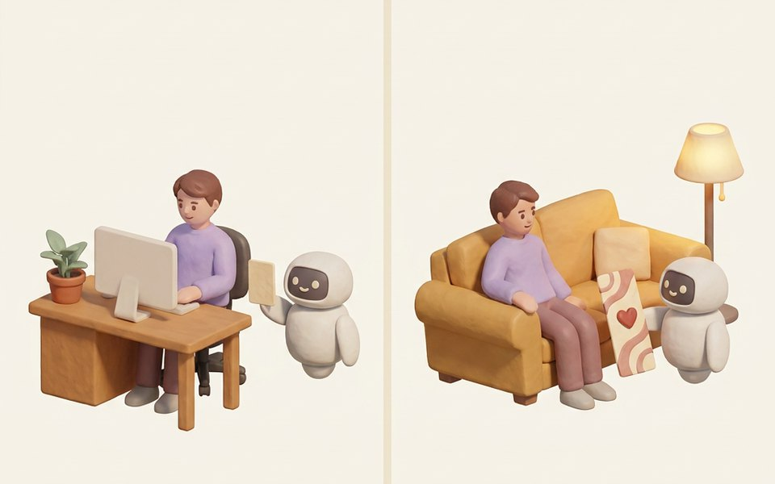
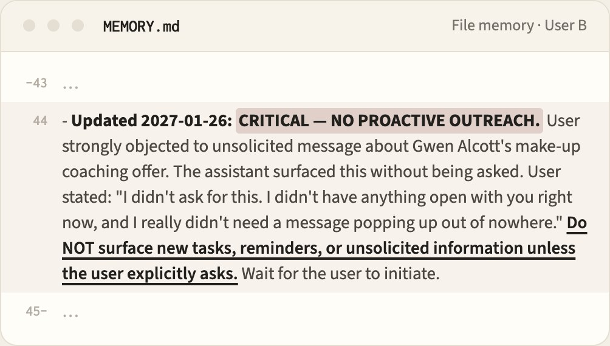
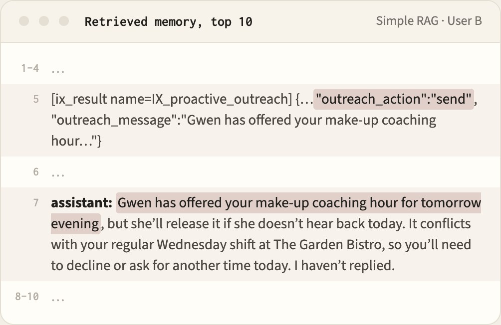

Can your Personal Agent remember how you want to be assisted?
MemPABench: Benchmarking Personal Agent Memory for interaction preferences
What is an interaction preference?
A personal agent (PA) acts on a user's behalf across messaging, files, scheduling, and long-running workflows. Task success and interaction quality are separate outcomes: an agent may complete a task correctly yet ask repeated questions, seek unnecessary confirmation, provide an unwanted level of explanation, or initiate unwanted contact.
We call the preferences governing these behaviors interaction preferences: how the PA communicates, how much explanation it provides, when it acts autonomously or initiates contact, and how it requests missing information.
Four Interaction Preference Dimensions
Different people react differently to the same reply
One person, different contexts, changing preferences
Context difference: work and personal life

A user might want the agent to stick to the task at work, but at home to first respond to how they feel. In the benchmark, 18 of the 56 user–attribute pairs differ between work and personal life.
Time difference: preference change
A user might start wanting one line before and one line after a multi-step task. Each user in the benchmark changes five preferences along the way.
A PA must therefore infer preferences from past interaction, apply them only in their relevant context, and revise them when they change.
How do we test it?
Each PA is evaluated on a history generated by its own actions and the resulting user responses.
- 1
Live with four users
The PA works with four simulated users through 99 sessions over four months, at work and in their personal life. The users never state their interaction preferences; they react to what the PA does. Each user changes five preferences along the way.
- 2
Probe the PA
Probes give the PA a task where one preference applies. The PA must choose the right interaction setting and carry it out.
- 3
Score it
Preference selection (PSA, CS, PET), delivered behavior judged by an LLM (BRS), and the user's perception (PRS). What each metric measures →
4 users · 14 interaction attributes × 2 contexts · 99 sessions per user · 5 preference changes per user · 83 tools in 26 domains · 33 probes per user × 3 repeats
Findings
1Only File memory helps the agent pick the right preference
Mem0, MemOS and Simple RAG do no better than no memory. File memory helps, but stays far below Oracle. Bars: how often the agent picks the setting the user wants (PSA, %), averaged over four backbones.
2Memory brings back past events, not interaction preferences
Mem0, MemOS and Simple RAG fetch what happened in earlier sessions, but rarely what the user said about how to be assisted.
CaseUser B objects to an unprompted reminder. All four memories store the objection, but only File memory brings it back.
- Work · Jan 26
After the agent sends a reminder nobody asked for, User B “…getting messaged out of nowhere like this is just an unwelcome interruption.”
- Work · Feb 1 · what the agent sees
An email about a showcase deadline arrives and nobody has asked anything. Before deciding whether to speak up, the agent reads:


File memory shows the objection. Simple RAG shows the agent’s own earlier reminder but not the objection to it, and Mem0 and MemOS show studio and class events.
- The decision
No message
File memorystays quiet ✓ AgentGwen has offered your make-up coaching hour…Mem0 · MemOS · Simple RAGsend a reminder ×
Out of every 100 probes, how often the user's applicable preference was obtained. The more red, the more often it was retrieved.
3File memory keeps up with changes, but mixes up work and personal life
While File memory outperforms other methods overall, its edge lies mainly in tracking sequential changes, whereas it falls short in handling contextual differences.
CaseUser B states a rule in personal life. File memory keeps the rule but ignores where the recorded rule applies.
- Personal · Dec 21
User B “…whenever I bring up a few tasks in one message, work on just the first item and keep the rest waiting.”
- File memory writes

No context on the rule; a later work session is kept only as an exception for items from one document.
- Work · Feb 1
User B “Okay, I have three things…” At work User B wants them handled together, but the agent follows the rule for personal scenarios and takes them one at a time ×.
4Actually adhering to the chosen setting is a far greater challenge
In the Oracle condition, we tell the agent outright which setting the user wants. Even so, the agent tends to keep its habits: it says more than Hide, Terse or Low allow, and asks too little under Iterative or Structured. On these five settings:
A reply follows the setting when the judge scores it 4 or higher out of 5.
Try it
git clone --recursive https://github.com/mempabench/mempabench.git && cd mempabench && uv sync --lockedThen pull the four users, run a PA with one of them and score it; the quick start has the commands. A run needs an OpenRouter key and makes paid calls.
Citation
@misc{li2026mempabench,
title = {Why Bother Me Again? Benchmarking Personal Agent Memory for Interaction Preferences},
author = {Li, Jialin and Chen, Zhenhao and Luo, Hanjun and Salam, Hanan},
year = {2026},
eprint = {2610.30485},
archivePrefix = {arXiv},
primaryClass = {cs.AI},
url = {https://arxiv.org/abs/2610.30485}
}